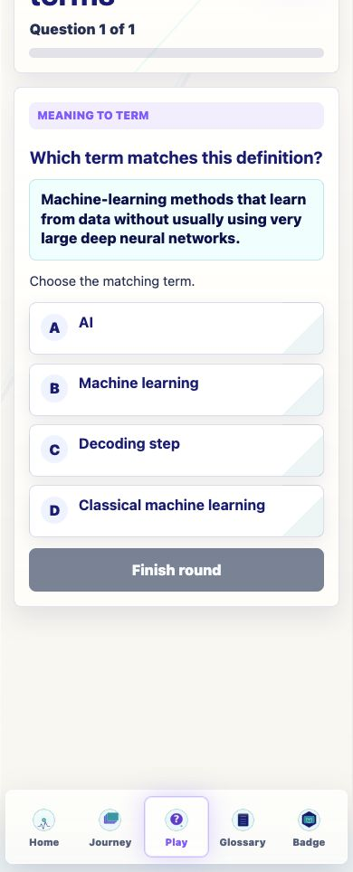
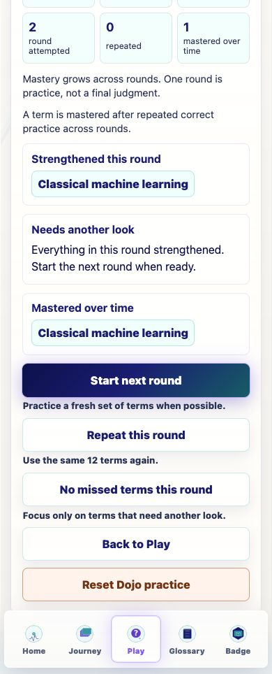
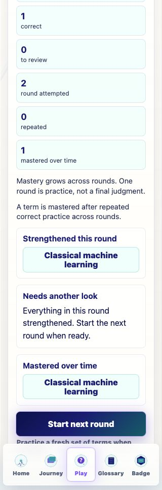

Glossary Coverage
- Total glossary terms counted: 122
- Available Dojo terms after normalization: 122
- Normal round size: 12
- Approximate full-coverage cycle: 10 full rounds, plus 2 terms
Prompt Life v0.22.1 pass, visible app v0.22.2
Date: 2026-06-07
This report wraps the implementation summary, QA findings, and screenshots for the Glossary Dojo round-strategy pass.
1 question and Everything in this round strengthened.new_round: fresh 12-term normal round when possible.repeat_round: same stored target set/question specs, incremented repeat count.review_missed: only missed question specs, shorter when needed.Builds passed with the existing Vite large-chunk warning.
completion|deep-learning|embedding|generated-token|generative-ai|input-context|llm|machine-learning|model-output|response-so-far|tensor|weight
classical-machine-learning|distributed-representation|embedding|embedding-table|empiricism|llm|next-token|pretraining|prompt-tokens|response-so-far|symbolic-ai|weight
Used the second normal fingerprint again with sourceMode: repeat_round, targetCount: 12, and repeatCount: 1.
Started with sourceMode: review_missed, targetCount: 1, and total: 1.
A focused one-question review round from the missed term.

Shows fresh/repeat/review action copy near the buttons.

Narrow-phone check with no horizontal overflow.
